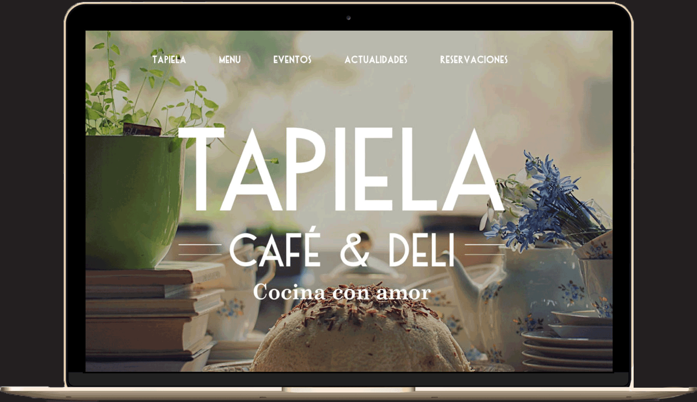

This project is a first try with Wordpress.
Tapiela, being a small beautiful cafe in the heart of México, is trying to keep its simplicity and finesse reflected in its website. Since Mexico is so big, they needed a space where users could have a taste of Tapiela first hand. Choosing a modern global theme that allows them to update their menu and pictures as fast as they change, without loosing time and this way keeping their customers coming back for more!
ConceptionThemeWebdesignBranding
Website design Social media update
2016, México